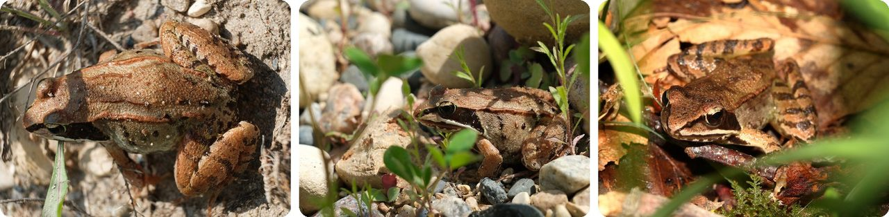
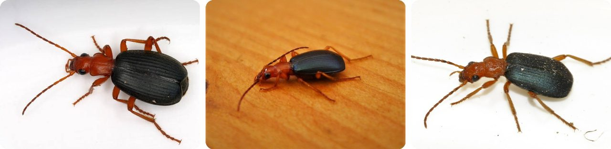
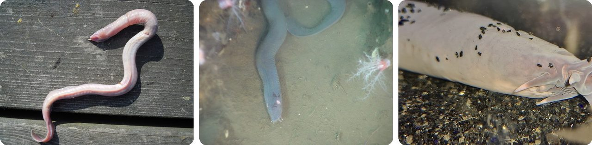
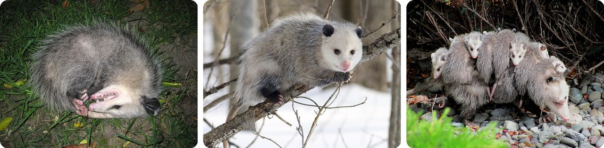
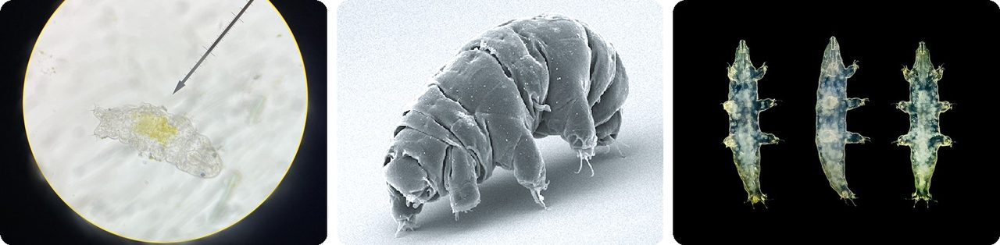
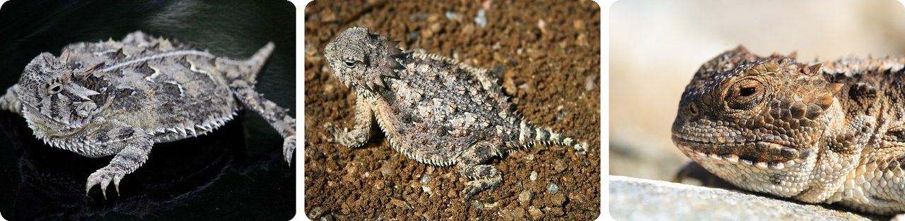
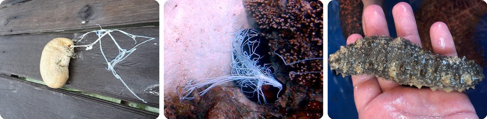
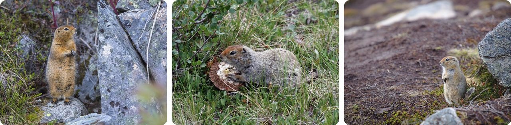
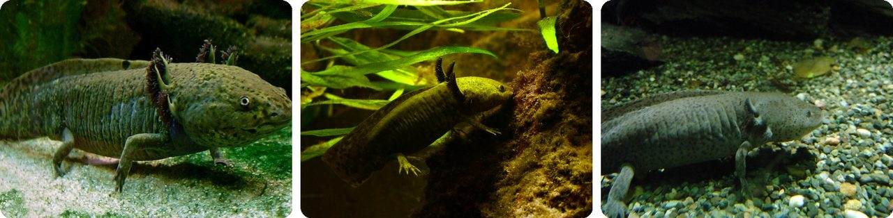
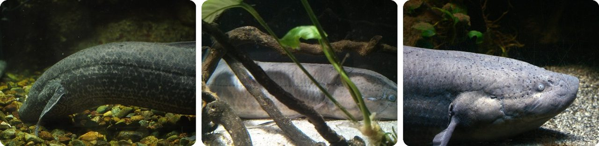

🌍 Top 10 Weird Animal Survival Tricks
Sep 30, 2026
1. 🐸 The wood frog freezes solid and thaws back to life

Every winter, the wood frog lets up to two-thirds of the water in its body turn to ice. While frozen it has no heartbeat, no breathing and no brain activity anyone can detect.
Before the freeze, its liver floods its blood with sugar. That sugar works like antifreeze inside its cells, so the ice can't tear them apart.
In Alaska, wood frogs stay frozen for about 193 days in a row. That's more than six months as a frog-shaped ice cube.
It's a frog popsicle that pauses its own life until spring.
2. 🪲 The bombardier beetle fires a boiling-hot spray from its rear

Inside its back end, the beetle keeps two chemicals in a storage tank. When something attacks, it squirts them into a small chamber where they react.
The reaction heats the mix to nearly the boiling point of water, and the gas it makes blasts the spray out with a loud pop. The spray stings the eyes and lungs of animals that try to eat it.
It doesn't fire one squirt but about 70 tiny bursts, at around 500 per second. That uses pressure instead of muscle, which saves the beetle energy. It carries enough for about 20 shots.
It's a tiny steam cannon in its back end.
3. 🐟 The hagfish escapes by turning seawater into slime

When a fish bites a hagfish, glands in its skin release slime. In seawater, that slime grows 10,000 times bigger in less than half a second.
Thin, stringy fibers make the slime tough. It clogs the attacker's gills so it can't breathe and has to let go.
Afterward, the hagfish ties its own body into a knot. It slides the knot from head to tail and scrapes the slime off.
Think of it as an airbag that goes off inside the attacker's mouth.
4. 🇺🇸 The opossum plays dead so well it even smells dead

First the Virginia opossum tries to look scary. It shows its 50 teeth, hisses, drools and puffs up its fur.
If that fails, it drops on its side with its mouth and eyes open and its tongue hanging out. Its heart rate falls by half, and its breathing gets almost too faint to notice. It can also leak a green, rotten-smelling fluid from its rear.
Many hunters only want live prey, so they lose interest. The act can last for several hours, and it's where the phrase "playing possum" comes from.
It's method acting, right down to the smell.
5. 🔬 The tardigrade dries up and survives almost anything

Tardigrades, also called water bears, are tiny animals that live in moss and ponds. When their home dries out, they pull in their legs and shrivel into a dry little ball called a "tun."
In that state their body stops working completely, and they can go years without food or water. They can briefly survive −272 °C, just a degree above the coldest temperature possible, and 149 °C, hotter than boiling water.
They've even survived being sent into outer space.
Basically, it turns itself into a dried seed and waits for water.
6. 🇺🇸 The horned lizard squirts blood from its eyes

At least eight kinds of horned lizard can shoot an aimed stream of blood from the corners of their eyes. The stream can fly up to 1.5 meters (5 feet), about the length of a bathtub.
To do it, the lizard squeezes the veins that drain its head. Pressure builds until tiny blood vessels around its eyelids burst.
The blood tastes awful to dogs and cats. Lizards that do this are more likely to survive an attack by dog-like hunters.
Think of it as pepper spray, fired from its eyes.
7. 🌊 Some sea cucumbers shoot sticky threads out of their rear

A sea cucumber breathes through its rear end. It pulls seawater in through its anus, and branching tubes inside take the oxygen out.
Some reef species use that same opening as a weapon. When startled, they push out sticky white threads through a tear in their rear to tangle up attackers. Other species go further and push out their own guts.
The lost threads grow back in about one and a half to five weeks.
In other words, its butt works as a lung and a silly-string launcher.
8. 🐿️ The Arctic ground squirrel chills its body below freezing

This squirrel hibernates for seven to eight months a year. Its body drops from a normal 37 °C to as low as −2.9 °C (27 °F), colder than any other hibernating mammal. Only its brain stays just above freezing.
Its heart slows to about one beat per minute. Every two to three weeks it shivers for 12 to 15 hours, still asleep, to warm up, then cools down again.
Its blood probably doesn't freeze because it removes the tiny specks that ice crystals need to start forming.
It sets its body colder than a fridge and sleeps through the winter.
9. 🇲🇽 The axolotl regrows lost legs, and even bits of its brain

The axolotl is a Mexican salamander that keeps its baby-like body and feathery gills its whole life. When it gets hurt, it doesn't scar. It regrows the missing part.
Whole legs and tails grow back over a few months. In some cases it rebuilds parts of its eyes, its heart and even its brain.
It can also accept transplanted eyes and brain parts from other axolotls and get them working.
Basically, its body keeps the blueprint and rebuilds from it.
10. 🌍 The African lungfish waits out droughts buried in dried mud

African lungfish live in shallow swamps that sometimes dry up completely. They have a lung and get about 90% of their oxygen from the air, not the water.
When the water disappears, the fish burrows into the mud under the drying stream bed. It can survive out of water there for many months. One species wraps itself in a layer of dried mucus while it waits.
When the rains come back, it wakes up, and that's when it breeds.
It's a fish that packs its own sleeping bag and waits for rain.
Fun fact
In 2018, a gold miner digging at Hester Creek near Dawson City, in Canada's Yukon, found a mummified Arctic ground squirrel. It was still curled up in its hibernating pose. Scientists unveiled it in 2023 and estimated it was about 30,000 years old. Frozen ground can keep an animal for tens of thousands of years, so who knows what else is still down there. Next time: animals from the Ice Age found frozen in the ground.
Photo credits (Wikimedia Commons)
- #1: Lithobates sylvaticus - Wood Frog 01.jpg by Jasper Shide, CC0
- #1: Lithobates sylvaticus - Wood Frog 02.jpg by Jasper Shide, CC0
- #1: Lithobates sylvaticus Stanton 1.jpg by Riley Stanton, CC BY-SA 4.0
- #2: Brachinus spPCCA20060328-2821B.jpg by Patrick Coin (Patrick Coin), CC BY-SA 2.5
- #2: Bombardier Beetle Brachinus crepitans (49137040738).jpg by gailhampshire from Cradley, Malvern, U.K, CC BY 2.0
- #2: Brachinus-crepitans-11-fws.jpg by Francisco Welter-Schultes, CC0
- #3: Myxine glutinosa no.JPG by Arnstein Rønning, CC BY-SA 3.0
- #3: Myxinidae.jpg by Ed Bowlby, NOAA/Olympic Coast NMS; NOAA/OAR/Office of Ocean Exploration, Public domain
- #3: Sixgill Hagfish (Eptatretus hexatrema) (52684863088).jpg by Bernard DUPONT from FRANCE, CC BY-SA 2.0
- #4: Opossum playing dead.jpg by Tony Alter, CC BY 2.0
- #4: Opossum 2.jpg by Cody Pope, CC BY-SA 2.5
- #4: Didelphis virginiana with young.JPG by Specialjake, CC BY-SA 3.0
- #5: Tardigrade under microscope.jpg by DSparrow14, CC BY-SA 4.0
- #5: SEM image of Milnesium tardigradum in active state - journal.pone.0045682.g001-2.png by Schokraie E, Warnken U, Hotz-Wagenblatt A, Grohme MA, Hengherr S, et al. (2012), CC BY 2.5
- #5: Tardígrado género Milnesium.jpg by Brandon Antonio Segura Torres & Priscilla Vieto Bonilla, CC BY-SA 4.0
- #6: Texas horned lizard phrynosoma cornutum close up high definition lizard photography.jpg by Burton Robert, U.S. Fish and Wildlife Service, Public domain
- #6: Horned lizard 032507 kdh.jpg by Room237, CC BY-SA 3.0
- #6: Phrynosoma hernandesi (Calibas).jpg by Calibas, CC BY-SA 3.0
- #7: Cuvierian-Waigeo.jpg by Lord Mountbatten, CC BY-SA 4.0
- #7: Sea cucumber defence.JPG by Brocken Inaglory, CC BY-SA 3.0
- #7: Florida Sea Cucumber Holothuria floridana crop rotate.jpg by seanpmyers, CC0
- #8: Arctic Ground Squirrel - Spermophilus parryii (21482875265).jpg by National Park Service, Alaska Region, Public domain
- #8: Spermophilus parryii (eating mushroom).jpg by Ianaré Sévi, CC BY-SA 3.0
- #8: Arctic ground squirrel, Hatcher Pass.jpg by Mmzx84mn, CC0
- #9: Axolotl ganz.jpg by LoKiLeCh, CC BY-SA 3.0
- #9: Axolotl Ambystoma mexicanum Aquarium Liège 30012016 1.jpg by Vassil, CC0
- #9: Axolotl Ambystoma mexicanum Aquarium Zoo Berlin, 2007.jpg by Kristof Magnusson, CC BY-SA 4.0
- #10: African lungfish (15779867175).jpg by harum.koh from Kobe city, Japan, CC BY-SA 2.0
- #10: East African lungfish.jpg by Jony Cooper, CC BY-SA 4.0
- #10: Protopterus annectens Aquarium Liège 30012016 2.jpg by Vassil, CC0


.jpg){kind=link}


_(52684863088).jpg){kind=link}


.jpg){kind=link}


.jpg){kind=link}
.jpg){kind=link}


.jpg){kind=link}